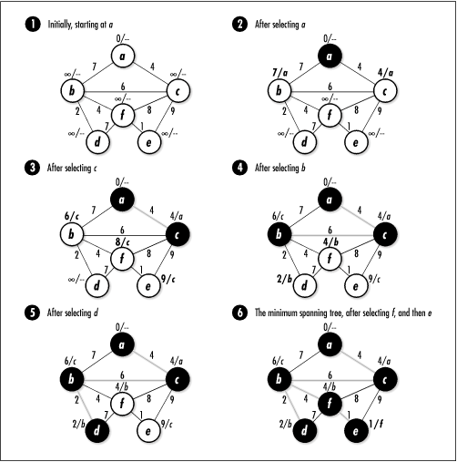

16.1 Description of Minimum
Spanning Trees
Picture a number of pegs on a board
connected by pieces of string. Assuming that every peg is
reachable from any other by traveling along one or more
strings, imagine a game in which the object is to remove some
of the strings until all of the pegs remain connected using
the least amount of string. This is the idea behind a minimum spanning tree. Formally
stated, given an undirected, weighted graph G = (V, E
), a minimum spanning tree is the set T of edges in E that connect all vertices in V at a minimum cost. The edges in
T form a tree because each
vertex ends up with exactly one parent that precedes it in the
span, with the exception of the first vertex, which is the
root of the tree.
16.1.1 Prim's Algorithm
One approach to computing a minimum spanning
tree is Prim's algorithm.
Prim's algorithm grows a minimum spanning tree by
adding edges one at a time based on which looks best at the
moment. The fact that Prim's algorithm adds edges using this
approach makes it greedy (see Chapter
1). Although greedy algorithms often yield approximations
rather than optimal solutions, Prim's algorithm actually
provides an optimal result.
Fundamentally, the algorithm works by
repeatedly selecting a vertex and exploring the edges incident
on it to determine if there is a more effective way to span
the vertices explored thus far. The algorithm resembles
breadth-first search because it explores all edges incident on
a vertex before moving deeper in the graph. To determine the
vertex to select at each stage, we maintain a color and a key
value with every vertex.
Initially, we set all colors to white and we
set all key values to  , which represents an arbitrarily large value greater
than the weight of any edge in the graph. We set the key value
of the vertex at which to start the span to 0. As the
algorithm progresses, we assign to all vertices except the
start vertex a parent in the minimum spanning tree. A vertex
is part of the minimum spanning tree only after it is colored
black. Before this time, its parent can fluctuate. , which represents an arbitrarily large value greater
than the weight of any edge in the graph. We set the key value
of the vertex at which to start the span to 0. As the
algorithm progresses, we assign to all vertices except the
start vertex a parent in the minimum spanning tree. A vertex
is part of the minimum spanning tree only after it is colored
black. Before this time, its parent can fluctuate.
Prim's algorithm proceeds as follows. First,
from among all white vertices in the graph, we select the
vertex u with the smallest key
value. Initially, this will be the start vertex since its key
value is 0. After we select the vertex, we color it black.
Next, for each white vertex v
adjacent to u, if the weight of
the edge (u, v) is less than the key value of
v, we set the key value of
v to the weight of (u, v)
and we set the parent of v to
u. We then repeat this process
until all vertices have been colored black. As the minimum
spanning tree grows, it consists of all edges in the graph
that have a black vertex on either end.
Figure
16.1 illustrates the computation of a minimum spanning
tree using Prim's algorithm. In the figure, the key value and
parent of each vertex are displayed beside the vertex. The key
value is to the left of the slash, and the parent is to the
right. The edges shaded in light gray are the edges in the
minimum spanning tree as it grows. The minimum spanning tree
computed in the figure has a total weight of 17.
 |